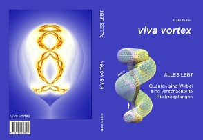
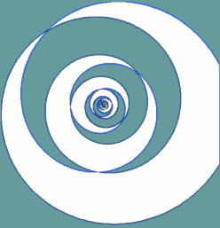

 |
Stand 5/2017: Zum Buch Viva Vortex von Gabi Müller mit vielen Leseproben. Interviews und Vorträge Seit August 2017: Blogs auf vivavortex.wordpress.com Seit Febr.2018 Perlenschnur e.V. |
Torkado
Hinweis: Hier nur ältere Texte (zum Teil überholt)
aktuellste Inhalte: vivavortex.wordpress.com
Subwirbel-Zwillinge (Stand 2014) Zum
Inhaltsverzeichnis für: "Qualitatives Torkado-Modell" (Stand 2007) Fraktale
u. a. mit Z^Z* und ZZ* (Stand 5/2009)
Inhaltsverzeichnis
für noch frühere Texte (vor 2004)
Stand
22.04.2007: Download torkado.de (34
MB, ohne Früchte-Bilder) Java-Applets
(Torus, Torkado, etc.) mit Download
(Hypothesen
und Studien zu freien 3D-Schwingungen)
www.vitaloop.de (Stand 5/2010)
Früchte-Bilder-Download
für Verzeichnis htm/images (14.6 MB)
Stand 31.8.2004: Chaos-Download
(23.7 MB), siehe www.aladin24.de/chaos/
Stand
31.8.2004: Fraktale-Download
(40.7 MB), siehe Fraktale-Bilder
Scripte und PHP-Programme
zur Elementarresonanz
Archiv (Forum
"Zauberspiegel Wissenschaft Ideenfabrik" vorübergehend aus)
Hinweis:
Links zu Seiten aus dem alten Parsimony-Forum bitte in die Form
http://www.alle24.de/archiv/xxxxx.htm
bringen.
Übersetzung Englisch --> Deutsch ist (vorherigem Link) aktivierbar !
Vorsicht, erst lesen, bevor Sie hier klicken:
Gefälschte Virenwarnung über Werbeanzeigen
W I C H T I G S T E S D O K U M E N T ! ! !
(Hier Linksliste extra anzeigen)
Okkulte Chemie 1950 (Leadbeater, Besant, Jinarajadasa):
TPH_OCIN
TPH_OC01
| TPH_OC02
| TPH_OC03
| TPH_OC04
| TPH_OC05
| TPH_OC06
| TPH_OC07
TPH_OC08
| TPH_OC09
| TPH_OC10
| TPH_OC11
| TPH_OC12
| TPH_OC13
| TPH_OC14
TPH_OCCO
TPH_OCAP
Volltext-Suche in automatisch erzeugter deutscher Übersetzung
@Torkadode folgen
 |
Impressum: Email: info@aladin24.de |  |
Home
Seit 04.10.2010: